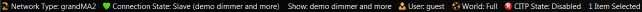

Status Bar
The status bar is at the bottom border of the program window.

The status bar includes the following elements:
- Network Type: Displays the network type.
- Connection State: The connection state displays, which connection the MA 3D has, along with the name of the session. To open the Sessions Window, click on the connection state.
MA 3D has no connection to a session.
MA 3D has joined a session as a slave.
- Show: Displays the name of the show file.
- User: Displays which user is logged in. Click on user, to change the user. The login pop-up opens.
- World: Displays the world. Click on the world, to open the select world window.
- CITP State: Displays the CITP state. Enable or disable the CITP from in the CITP Network Configuration of the grandMA2 or onPC.
CITP is disabled.
CITP is enabled.
- Item Selected: Displays how many items are currently selected.